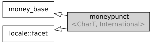

std::moneypunct
来自cppreference.com
| 在标头 <locale> 定义
|
||
| |
||
刻面 std::moneypunct 封装货币值格式化偏好。流输入/输出操纵符 std::get_money 和 std::put_money 通过 std::money_get 和 std::money_put 用 std::moneypunct 解析货币值输入及格式化货币值输出。

继承图
特化
标准库保证提供以下特化（所有本地环境对象都需要实现这些特化）：
在标头
<locale> 定义 | |
std::moneypunct<char>
|
提供 "C" 本地环境偏好的等价版本 |
std::moneypunct<wchar_t>
|
提供 "C" 本地环境偏好的宽字符等价版本 |
std::moneypunct<char, true>
|
提供 "C" 本地环境偏好的等价版本，带国际通货符号 |
std::moneypunct<wchar_t, true>
|
提供 "C" 本地环境偏好的宽字符等价版本，带国际通货符号 |
嵌套类型
| 类型 | 定义 |
char_type
|
CharT
|
string_type
|
std::basic_string<CharT>
|
数据成员
| 成员 | 描述 |
std::locale::id id [静态]
|
刻面标识 |
const bool intl [静态]
|
International
|
成员函数
构造新的 moneypunct 刻面 (公开成员函数) | |
调用 do_decimal_point (公开成员函数) | |
调用 do_thousands_sep (公开成员函数) | |
调用 do_grouping (公开成员函数) | |
调用 do_curr_symbol (公开成员函数) | |
调用 do_positive_sign 或 do_negative_sign (公开成员函数) | |
调用 do_frac_digits (公开成员函数) | |
调用 do_pos_format/do_neg_format (公开成员函数) |
受保护成员函数
销毁 moneypunct 刻面 (受保护成员函数) | |
| 提供用作小数点的字符 (虚受保护成员函数) | |
| 提供用作千位分隔符的字符 (虚受保护成员函数) | |
[虚] |
提供二个千位分隔符间的位数 (虚受保护成员函数) |
| 提供用作通货标识符的字符串 (虚受保护成员函数) | |
| 提供指示正或负值的字符串 (虚受保护成员函数) | |
| 提供小数点后要显示的位数 (虚受保护成员函数) | |
| 提供通货值的格式化模式 (虚受保护成员函数) |
继承自 std::money_base
嵌套类型
| 类型 | 定义 |
enum part { none, space, symbol, sign, value };
|
无作用域枚举类型 |
struct pattern { char field[4]; };
|
货币格式类型 |
| 枚举常量 | 描述 |
none
|
容许但不要求空白符，除了在末位置不容许空白符 |
space
|
要求一或多个空白字符 |
symbol
|
要求 std::moneypunct::curr_symbol 所返回的字符序列 |
sign
|
要求 std::moneypunct::positive_sign 或 std::moneypunct::negative_sign 所返回的首个字符 |
value
|
要求绝对数值货币值 |
参阅
| 定义货币格式化模式 (类) | |
| 表示系统提供的具名本地环境的 std::moneypunct (类模板) | |
| 从输入字符序列中解析并构造货币值 (类模板) | |
| 格式化货币值为字符序列以输出 (类模板) |